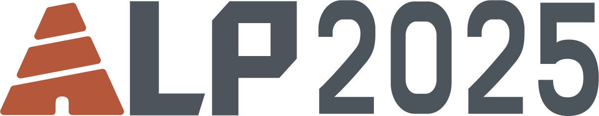

Second Workshop on Ancient Language Processing
Co-located with NAACL2025 from April 29 to May 4, 2025
@Albuquerque, New Mexico
Ancient languages contain rich human historical and cultural wealth. So far there has been some good advancement in applying language technologies to ancient languages such as Sumerian, Akkadian, Latin, Ancient Greek and Ancient Chinese, especially in the construction of digital language resources and resources to facilitate automatic analysis. The workshop on Ancient Language Processing aims to focus specifically on ancient languages and scripts from the emergence of writing in Mesopotamia and Egypt c. 3000 BCE to the entire world up till 800 AD. We wish to provide a recognized forum to further advance this subfield of NLP, where researchers and practitioners can meet and discuss their latest work, and exchange ideas in addressing shared epigraphical challenges in language processing across various ancient languages, such as non-Latin and non-alphabetic scripts, Right-to-Left, transliteration conventions and fragmentary texts. In addition, we propose two shared tasks: EvaCun, focusing on using LLMs for Cuneiforms, and EvaHan, addressing Named Entity Recoganition for Ancient Chinese. These tasks aim to provide an opportunity to tackle the unique challenges of ancient language processing.
Languages of interest include, but are not limited to:
- Mesopotamia: Sumerian, Akkadian
- Iran: Elamite, old and middle Persian
- Levant: Eblaite, Amorite, Aramaic (incl. Mandaic and Syriac), Ancient Hebrew, Phynician, Ugaritic
- Anatolia: Hittite, Luwian and minor Anatolian languages
- Egypt: Ancient Egyptian, Coptic
- Mediterranean: Linear A and B, Ancient Greek, Latin
- Arabia: Ancient North Arabian, old Arabic
- India: Sanskrit, Eastern Panjabi, Pali
- China: Literary Chinese, Tibetan
- Mesoamerica: Mayan
- Japan: Old Japanese
Important Days:
- Paper submission due:
Feburary 4, 2025Extended to Feburary 9, 2025 - Notification of acceptance:
March 1, 2025Extended to March 5, 2025Extended to March 10, 2025 - Camera-ready paper due:
March 10, 2025Extended to March 15, 2025Extended to March 18, 2025 - EvaHan & EvaCun Shared Tasks:
- Registration for participation/Training data release: December 1, 2024 - Janurary 15, 2025
- Test data release: Feburary 15, 2025
- Running results submission: Feburary 21, 2025
- Tech report submission deadline: Feburary 28, 2025
- Notification of acceptance: March 5, 2025
- Camera-ready papers due: March 15, 2025
- ALP workshop date: May 3 or 4 (TBD), 2025